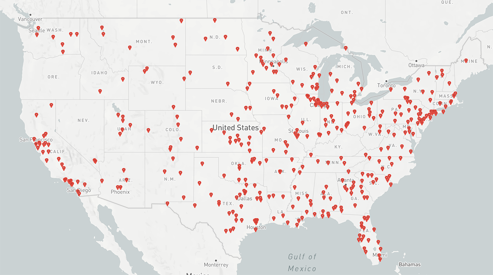

Early Prototype
Voice-Assisted Emergency Room Finder
At this phase, I have determined how to use the Mapbox API + Data.Medicare.Gov to geolocate the 4806 hospitals in the US that have emergency departments. The next steps include geolocating the user and using the Mapbox Directions API to find the closest hospital with the shortest wait. This would conclude development of the backend.
In the mean time, I have mocked up a prototype of how the interaction might go in BotSociety. This will guide the development of the DialogFlow for the voice side of the interface.
Uses MapBox API to geolocate hospitals around the US

PseudoCode shows what needs to happen on the backend
> Get user location and save to variable
> Aggregate locations of and wait times at hospitals
> Compare user location to list of hospital locations
> Calculate distance plus wait time of ten closest hospitals
> Output result that offers least drive + wait time
> Look up phone number and connect call to check wait time